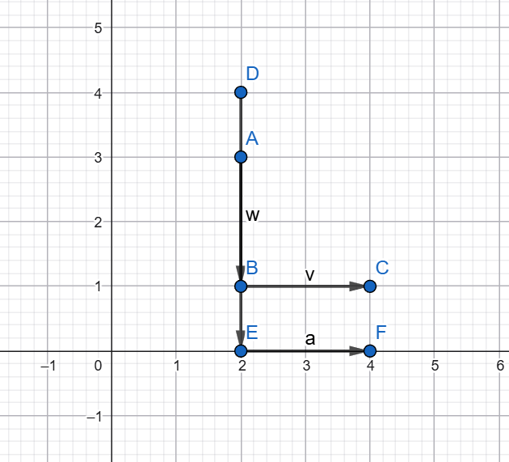

Alif Indra Aufakhi Akrom250411100179Teknik Informatikamateri |
Transformasi Matriks Analisis transformasi titik berdasarkan grafik: 1. Transformasi A → BTitik awal: $$ A = (2,3) $$ Titik tujuan: $$ B = (2,1) $$ Perubahan: $$ \Delta x = 2 - 2 = 0 $$ $$ \Delta y = 1 - 3 = -2 $$ Vektor translasi: Verifikasi: $$ (2,3) + \begin{bmatrix} 0 \\ -2 \end{bmatrix} = (2,1) $$ 2. Transformasi B → CTitik awal: $$ B = (2,1) $$ Titik tujuan: $$ C = (4,1) $$ Perubahan: $$ \Delta x = 4 - 2 = 2 $$ $$ \Delta y = 1 - 1 = 0 $$ Vektor translasi: Verifikasi: $$ (2,1) + \begin{bmatrix} 2 \\ 0 \end{bmatrix} = (4,1) $$ 3. Transformasi D → ETitik awal: $$ D = (2,4) $$ Titik tujuan: $$ E = (2,0) $$ Perubahan: $$ \Delta x = 2 - 2 = 0 $$ $$ \Delta y = 0 - 4 = -4 $$ Vektor translasi: Verifikasi: $$ \begin{bmatrix} 0 \\ -4 \end{bmatrix} $$ Verifikasi: $$ (2,4) + \begin{bmatrix} 0 \\ -4 \end{bmatrix} = (2,0) $$ 4. Transformasi E → FTitik awal: $$ E = (2,0) $$ Titik tujuan: $$ F = (4,0) $$ Perubahan: $$ \Delta x = 4 - 2 = 2 $$ $$ \Delta y = 0 - 0 = 0 $$ Vektor translasi: Verifikasi: $$ (2,0) + \begin{bmatrix} 2 \\ 0 \end{bmatrix} = (4,0) $$ Kesimpulan$$ A \rightarrow B : \begin{bmatrix} 0 \\ -2 \end{bmatrix} $$ $$ B \rightarrow C : \begin{bmatrix} 2 \\ 0 \end{bmatrix} $$ $$ D \rightarrow E : \begin{bmatrix} 0 \\ -4 \end{bmatrix} $$ $$ E \rightarrow F : \begin{bmatrix} 2 \\ 0 \end{bmatrix} $$ PenjelasanSetiap pasangan titik mengalami perubahan posisi yang berbeda. Ada yang berpindah secara vertikal dan ada juga yang horizontal. Karena tidak memiliki pola perubahan yang sama, transformasi ini tidak bisa dinyatakan dalam satu matriks tunggal, melainkan berupa beberapa translasi yang berdiri sendiri. |